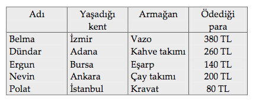

MANTIK BİLMECESİ-5
Yılbaşı için beş değişik kentteki beş kişi yakınları için armağanlar aldılar. Aşağıdaki ipuçlarına dayanarak bu beş kişinin hangi kentte yaşadıklarını, ne armağan aldıklarını ve kaç para ödediklerini bulunuz.
İpuçları
1. Çay takımı alan Ankara’daki kişi, eşarp alandan daha fazla, fakat Dündar’dan daha az para ödedi.
2. Kravat, Nevin’in aldığı armağandan daha ucuzdu; Belma’nın aldığı ise Adana’daki kimsenin aldığından aynı miktarda daha pahalıydı. Bu dört kişiden hiçbirinin eşarpla ilgisi yoktu.
3. Bursa’da yaşayan kişi, Polat’ın ödediğinden 60 TL daha fazla ödedi; fakat bu İzmir’de kahve takımı almayan kişininki kadar pahalı değildi.
4. 260 TL ödeyen adam ve 380 TL ödeyen kişi İstanbul’da yaşamıyordu.
Cevap:
